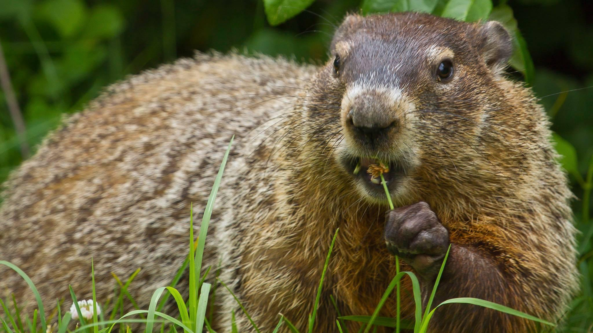

Groundhog

Groundhogs belong to the squirrel family and are large rodents. They are herbivores that eat grass, bark, roots and other vegetation. Groundhogs are diggers that create burrows used for safety, sleep and hibernating away from predators. They are solitary animals, but can groups. Although groundhogs are associated with predicting the end of winter on Groundhog day, but are often inaccurate with their predictions.